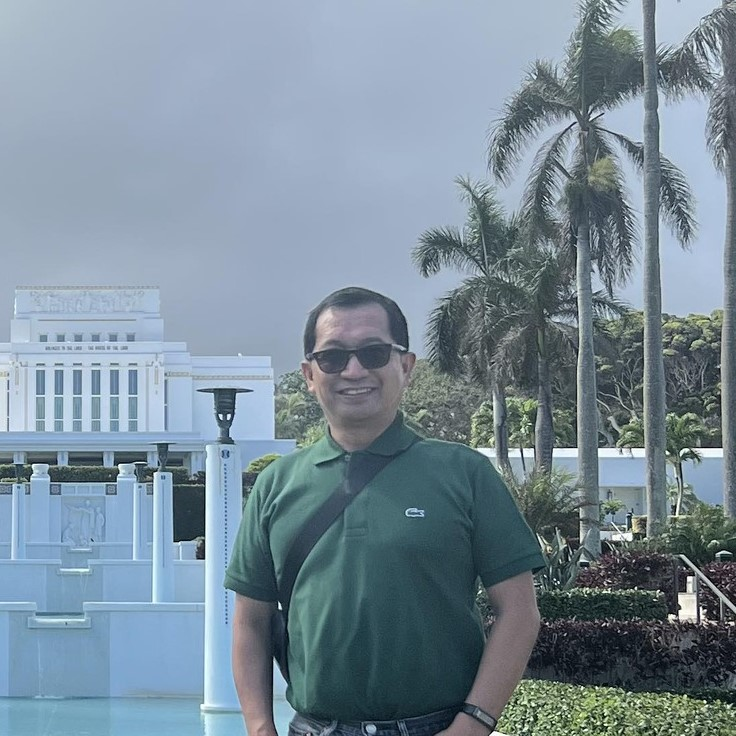
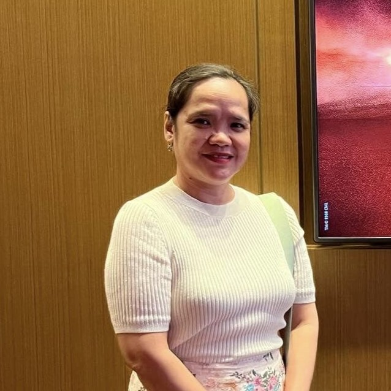
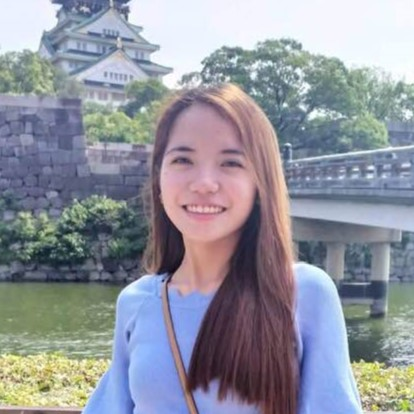
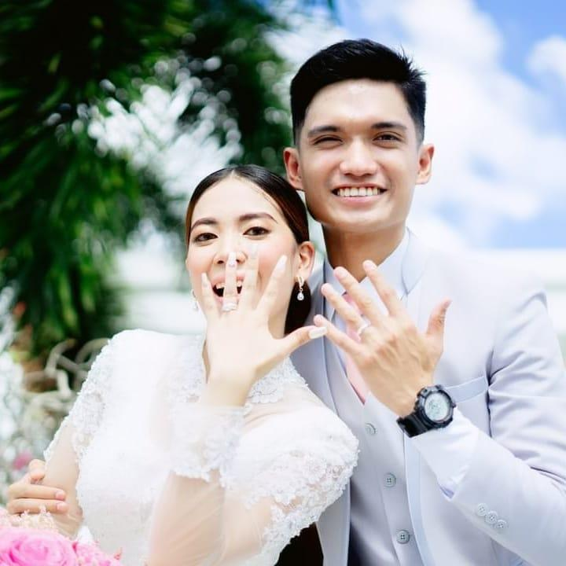

Rhodell Agustin
This photo was taken in Laie Hawaii Temple. I would like to introduce my dad, he is the best dad in the world.
My dad works in Lufthansa Technik Philippines, and he is a good provider for our family.
He served his mission way back 1990, and now he set an example for each of to be respectul, hardworking and to always be obedient to the commandments of God.

Leolevin Agustin
This photo was taken during the play Miss Saigon in the Philippines. I would like to introduce my beautiful mom. My mom has been a full-time ever since we were born. The reason behind it is that she wants to take care of us, and to be there for us whenever we need her.
She manages the house, and she is the one who cooks for us. We are blessed to have her as our mom.
Malu and Jared Agustin
This photo was taken after their temple session. This is my brother and his wife. They got married last 2019 in the Manila Philippines Temple. They are fun to be with, and my brother was the one who introduced me to video games.
They are both hard working and sometimes they treat us to go out and eat.

Patricia Agustin
This photo was taken during the time my sister is in Japan. This is my sister, she is the middle child. Sometimes we call her "Princess" because sometimes she does not want to do the
household chores. But she is a good sister, and she inspires me to do better in my studies. Recently, she got her own endowment in the temple, and hopefully she will be sealed with her eternal companion soon.

AC and Miguel Agustin
This is me, I am the youngest in the family. So this picture is me and my wife during our wedding day. I am currently studying at BYU-Hawaii, and I am taking up Computer Science. I am grateful for the opportunity to study here, and I am grateful for the support of my family.
Today my goal is to finish my studies, and to have that career that will help me to provide for my family.